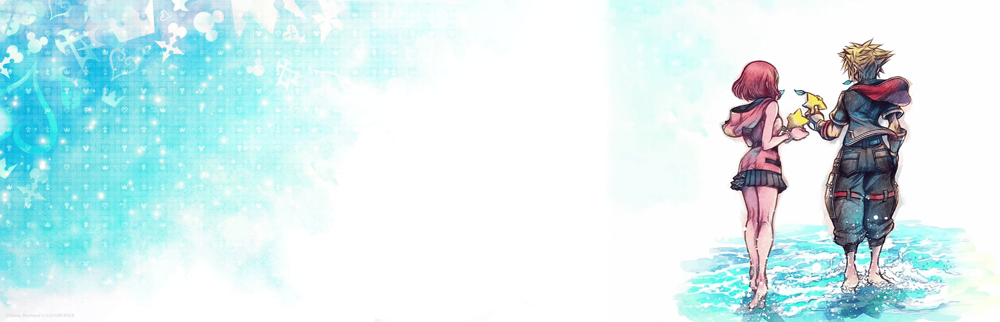
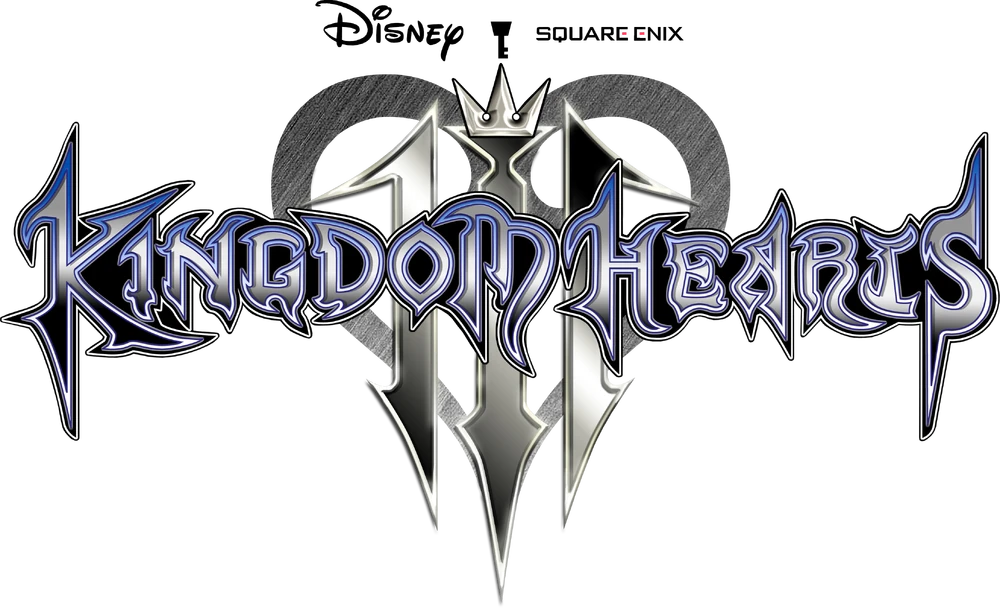
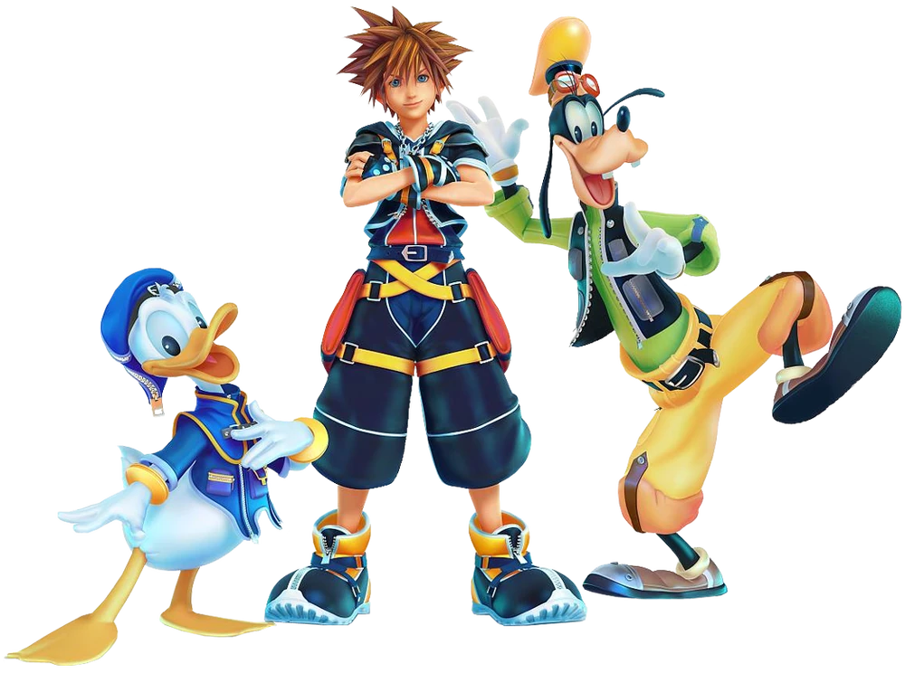
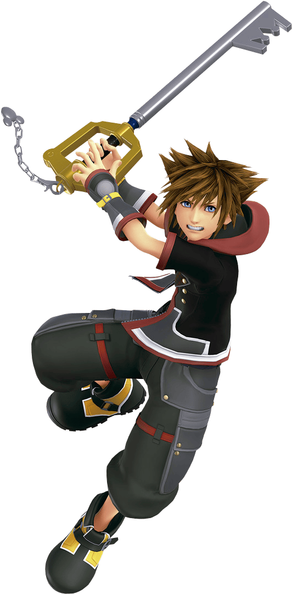

Kingdom Hearts III (キングダムハーツIII) es un videojuego de tipo ARPG desarrollado por
Square Enix y que fue publicado por la misma empresa para las consolas PlayStation 4 y Xbox One.[1] Fue
anunciado en el E3 2013, y en la D23 Expo 2017 se confirmaría su fecha de lanzamiento para 2018.[2]
- Desarrollador: Square Enix
- Distribuidor: Square Enix
- Director: Tetsuya Nomura
- Productor: Shinji Hashimoto
- Compositor: Yōko Shimomura
- Franquicia: Kingdom Hearts
- Género: ARPG
- Idiomas: Inglés
- Modos de juego: Un jugador
- Clasificaciones:



Tras el regreso del Maestro Xehanort, Yen Sid comienza a preparar a los siete custodios
de la luz para contrarrestar el plan de Xehanort de forjar la llave espada x utilizando una Organización
XIII reconstituida. Sora, que estuvo a punto de ser dominado por Xehanort, (como se muestra en Kingdom
Hearts 3D: Dream Drop Distance.) descubre que ha perdido gran parte de su propia fuerza como resultado.
Acompañado por el Pato Donald y Goofy, Sora retoma sus viajes por otros mundos para recuperar su "poder
del despertar", la capacidad de restaurar los corazones perdidos. Mientras tanto, Riku y el Rey Mickey
buscan a Aqua en el reino de la oscuridad, mientras Kairi y Lea se entrenan con Merlín para manejar
correctamente sus recién obtenidas Llaves Espadas.

Durante sus viajes, Sora y Riku son contactados por Ienzo, que descubre a través de los
datos de investigación de Ansem el Sabio que el cuerpo de Sora contiene los corazones de Roxas, Ventus y
Xion. Riku concluye que los miembros de la Organización del pasado están utilizando réplicas humanas
artificiales creadas por Vexen como recipientes que permiten su existencia en el presente, lo que
inspira a Sora a restaurar a Roxas transfiriendo su corazón a un cuerpo réplica. Mientras tanto, el
Ansem sin corazón entra en el reino de la oscuridad y secuestra a Ansem el Sabio, corrompiendo el
corazón de Aqua en el proceso. Sin embargo, Vexen se revela como un agente doble leal a Ansem el Sabio,
a quien ayuda a rescatar antes de enviar una réplica de repuesto a Ienzo para que Roxas la habite.
Sumérgete en la épica aventura de Kingdom Hearts III, donde la luz y la
oscuridad colisionan en un viaje inolvidable junto a Sora y sus amigos.
Descubre mucho más del juego en los siguientes enlaces: